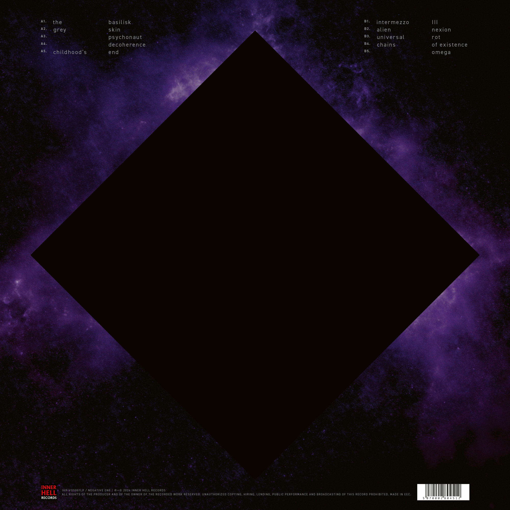
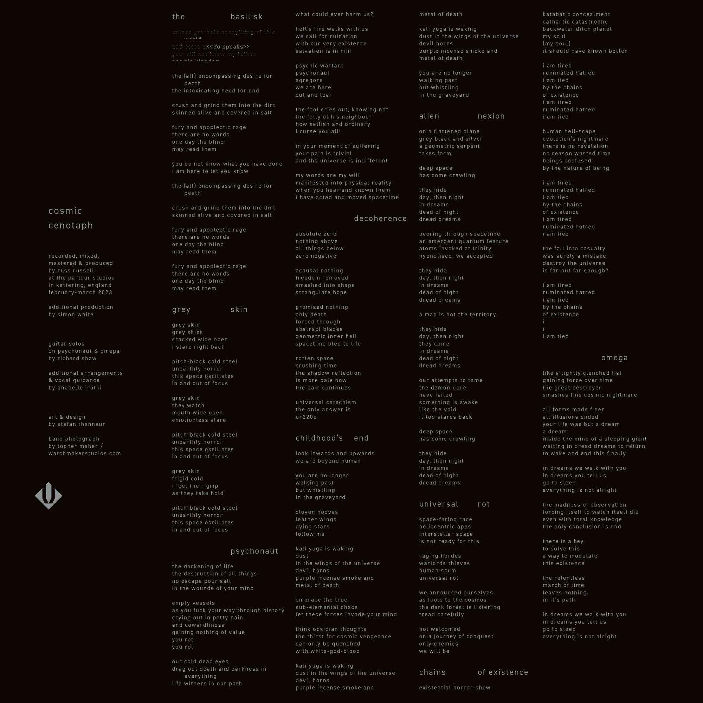
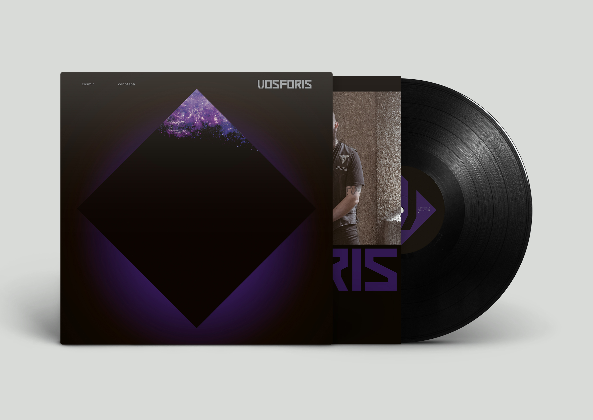
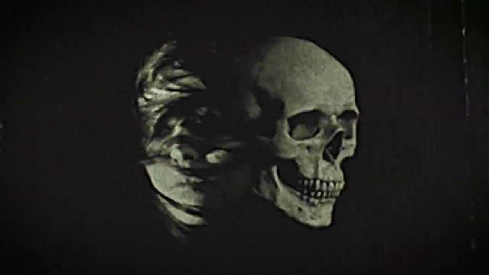

Eleven tracks across roughly fifty minutes. Pressed on 180g heavyweight vinyl with premium sleeve packaging and full digital availability via streaming and Bandcamp.

Inner Hell Records - IHR-VOS001
UK extreme metal. Black metal architecture, industrial textures, cosmic dread.
Bio
Vosforis is a UK extreme metal project blending black metal velocity with industrial weight and philosophical themes. Formed in 2022, the band builds dense, architectural compositions that move between blast-driven aggression and slower, ritualistic passages.
Their debut album Cosmic Cenotaph was released on 19 April 2024 through Inner Hell Records - eleven tracks examining mortality, scale, and the indifference of the void, presented across a 180g vinyl edition and full digital release.
Debut Album
Eleven tracks across roughly fifty minutes. Pressed on 180g heavyweight vinyl with premium sleeve packaging and full digital availability via streaming and Bandcamp.



Watch

Listen & Follow
Hyperfollow
All platforms
Spotify
Stream
Apple Music
Stream
Instagram
@vosforisofficial
YouTube
IHR channel
All links also collected in the Vosforis link hub.